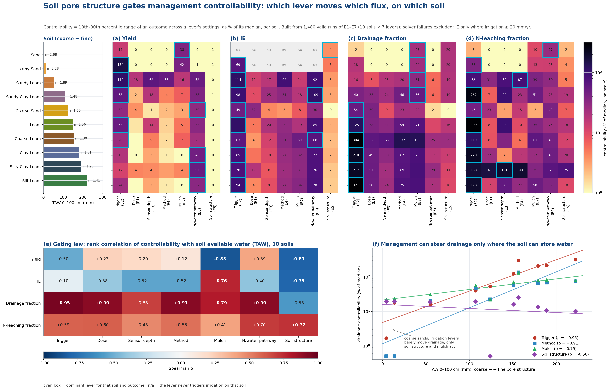
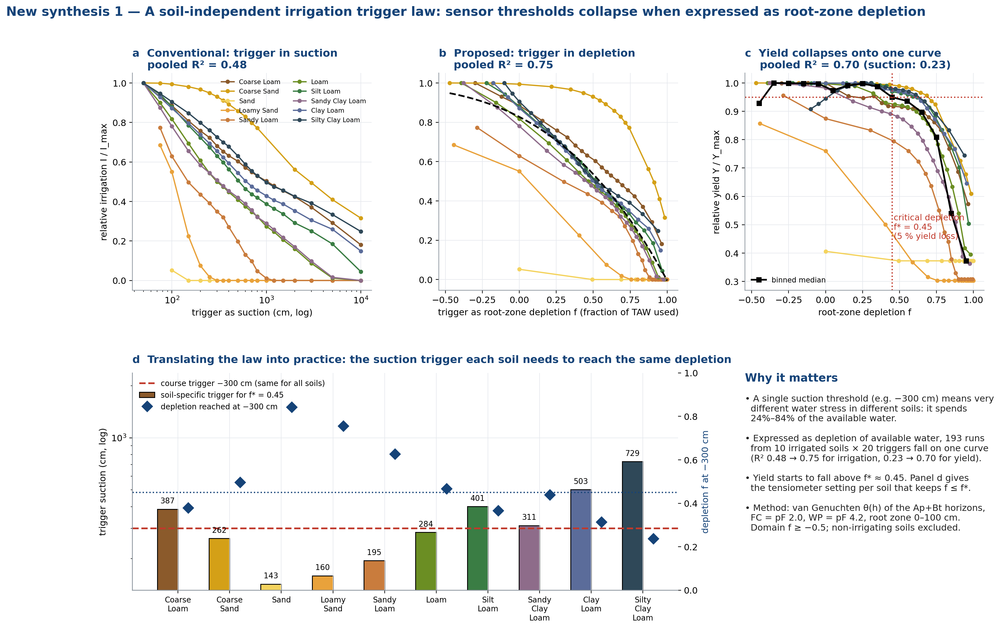
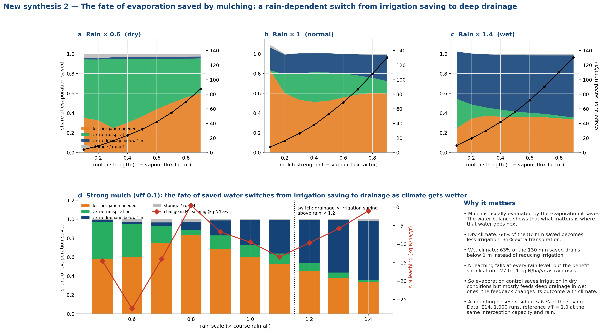
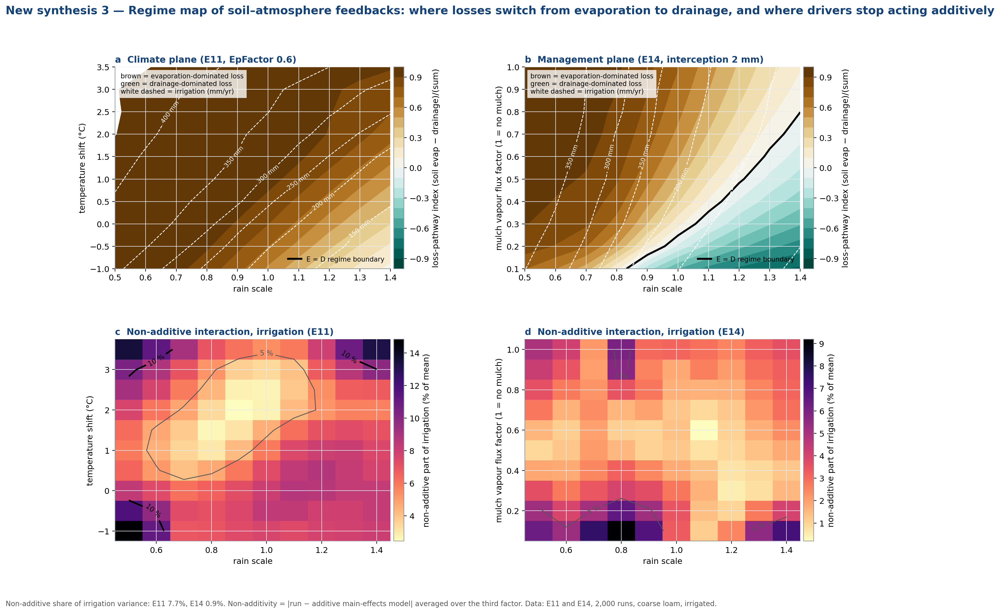

Interactive widget, key figures, and video simulations from the 10,190-run study
Drag the range slider to move through the 20-year record and see how suction at 20 cm depth responds to rainfall and irrigation, for both an irrigated and a rainfed soil.




V1. Sensor suction and irrigation events through the 1994 season
V2. Soil profile evolution (pressure head with depth) through 1994
V3. Tillage and structural consolidation over 20 years
V4. Mulched vs bare soil evaporation, 1994
V5. Feedback-loop trajectories through the 1994 season